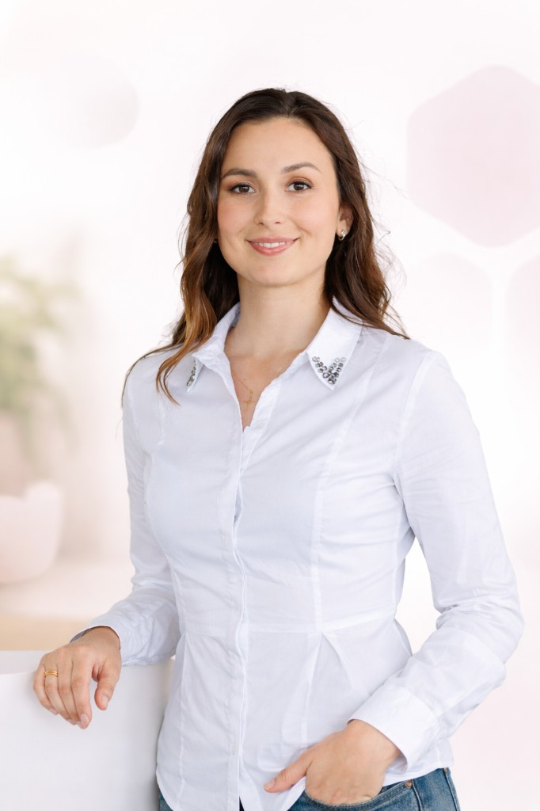
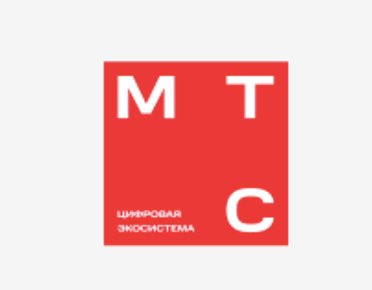

Analyst
Работа с бизнес-процессами и финансовыми моделями крупных компаний
D
Deloitte
PRODUCT AND GROWTH LEADERSHIP

Объединяю продукт, данные и AI с бизнес-стратегией там, где это реально усиливает результат. Формирую и развиваю продуктовые и инженерные команды и довожу до результата. Помогаю специалистам и лидерам разбираться с карьерными вызовами и находить точки роста.
Открыта к сотрудничеству, консалтингу, менторству — и всегда за содержательные разговоры про продукты, рост и экономику будущего.
Работа с бизнес-процессами и финансовыми моделями крупных компаний
Запуск и развитие цифровых B2C Cloud продуктов, улучшение пользовательского опыта и эффективности

МТС DigitalРазвитие EdTech-продуктов, запуск новых образовательных решений и работа с партнёрствами
Создание и развитие бизнес-юнита образовательных, карьерных и skill-based продуктов: стратегия, бизнес-модель и монетизация
Консультирую команды по продуктам и внутренним инициативам на разных этапах — от стартапов до корпоративных проектов: стратегия, запуск, метрики, монетизация и выход на рынок
Инициировала и вывела на рынок систему оценки навыков в партнерстве с Минцифры РФ, масштабировав ее до миллионов пользователей и уровня отраслевого стандарта
GOVTECH · HR-TECH · НАЦ. ПЛАТФОРМЗапустила с нуля новый источник выручки для группы компаний и довела до масштабирования: выручка ×8 за 12 месяцев, положительная EBITDA в первый год
B2C · КАРЬЕРНЫЕ СЕРВИСЫОптовый канал: рост на +15%, три стратегических контракта с ключевыми контрагентами
B2B · РИТЕЙЛСовместно с топ-1 детским блогером в СНГ запустили детское приложение, первые продажи спустя 1.5 месяца после запуска инициативы
B2C. ЗАПУСК СТАРТАПАПродуктовые изменения и редизайн: целевая конверсия +15%, активность пользователей +30%
EDTECH · B2CGTM-консалтинг на рынок США: ~40% рост базы пользователей
ЗАПУСК СТАРТАПА · GTMОптимизация архитектуры и процессов: −$0,3 млн операционных затрат, NPS +5%
B2B · ОБЛАКО / ИНФРАСТРУКТУРАЕдиная навыкоцентричная модель и алгоритмы на джобборде: рост конверсий ключевых сценариев, повышение качества подбора
HR-TECH · ПЛАТФОРМАКратко опишите проект или инициативу: стадия, состав команды, запрос на выходе
Помогаю разобраться в карьерном запросе и дойти до результата. Более 200 проведённых интервью и 4+ лет между продуктом и наймом. Я разобралась, как со стороны компании читают ваш опыт и навыки, и что для них по-настоящему важно: и в российских, и в зарубежных командах
Смена траектории: переход в Product Management, с ясной историей для резюме и интервью
PM · ТРАЕКТОРИЯЗакрепление в продукте и выход на следующий грейд — с фокусом на влияние и зону ответственности
РОСТ · ГРЕЙДOффер в крупной технологической компании на уровне руководителя за 2 месяца
Оффер · BigTechОт идеи до живого продукта за 2 месяца — с понятным MVP и первой обратной связью с рынком
B2C. ЗАПУСК СТАРТАПАПодготовка к переговорам и упаковке истории: привлечение инвестиций за пределами локального рынка
ИНВЕСТИЦИИ · B2CПосле совместной работы — заметный рост откликов и приглашений: резюме и стратегия поиска
РЕЗЮМЕ · ПРИГЛАШЕНИЯСокращение длительности поиска за счёт фокуса, приоритетов и отточенной воронки собеседований
ПОИСК РАБОТЫ · ИНТЕРВЬЮГотовы обсудить карьерный запрос — запишитесь на сессию
Эксперт по рынку труда, навыкам и трансформации профессий. 100+ публикаций в ведущих деловых и технологических медиа: РБК, Forbes, Коммерсантъ, Ведомости, ТАСС, Известия и другие. Выступаю на конференциях, в СМИ, на ТВ и в digital-форматах
Если что-то отозвалось — пишите, буду рада знакомству и сотрудничеству